O que acontece com o que as pessoas contam para a gente
Este manual explica a Ouvidoria do começo ao fim, com as telas de verdade do sistema e um vídeo curto em cada capítulo. Não é um manual de computador: é a explicação de um processo do hospital. Se você recebe casos da Ouvidoria, se cobra respostas, ou se só quer entender o que acontece quando alguém reclama, é para você.
As seis palavras que você vai ver o tempo todo
O sistema usa sempre as mesmas palavras. Se estas seis ficarem claras, o resto do manual fica fácil.
Manifestação
É o nome de tudo que uma pessoa conta para a Ouvidoria: uma reclamação, um elogio, uma sugestão, uma denúncia. Neste manual também chamamos de caso. Cada manifestação ganha um número na hora, e é por esse número que ela é acompanhada até o fim.
Protocolo
O número da manifestação, no formato 2026-0001. Nasce sozinho, na ordem de chegada. É o que a pessoa guarda e o que a Ouvidoria usa para achar o caso.
Ouvidor
Quem lê o relato, decide do que se trata, escolhe o setor responsável e cobra a resposta. Todas as decisões passam por ele. Nenhuma delas é automática.
Responsável do setor
A pessoa que responde pela sua área quando um caso chega nela. Não precisa de login nem de senha: recebe um e-mail com um botão e responde por ali mesmo.
Gravidade
O tamanho do problema, em quatro degraus: crítico, alto, médio e baixo. É a gravidade que define quanto tempo o setor tem para responder. Quem escolhe é o ouvidor.
Situação
Onde o caso está agora: esperando a Ouvidoria olhar, esperando o setor responder, esperando o manifestante, respondido ou encerrado. A situação muda sozinha conforme o caso anda.
Uma regra vale para tudo: nenhuma porta de entrada decide nada. Quem escreve pelo site, quem lê o QR na parede e a assistente do WhatsApp só registram o que aconteceu. O tipo, o setor, a gravidade e o sigilo são sempre escolha do ouvidor, depois de ler.
O caminho de um caso, do começo ao fim
Todo caso segue os mesmos cinco passos. Os capítulos deste manual são exatamente esses passos, na ordem.
Por uma das quatro portas. Ela recebe o número do protocolo na hora e um e-mail avisando que chegou.
Ele decide do que se trata, qual setor responde e o tamanho do problema. No mesmo clique, o setor recebe o e-mail com o prazo.
O responsável abre o link do e-mail, lê o caso e escreve o que foi feito para corrigir. Sem login.
Se o prazo se aproxima e ninguém respondeu, o sistema avisa. Se vence, cobra. Se continua parado, sobe para o gestor e depois para a Diretoria.
O ouvidor lê a resposta do setor, encerra o caso com uma conclusão e a pessoa recebe um e-mail contando no que deu.
O que o sistema nunca faz sozinho: acordar um setor. Só o ouvidor aciona uma área, e sempre depois de ler o caso. O que o sistema faz sozinho é cobrar quem já foi acionado e avisar quem precisa saber.
Por onde o caso chega
São quatro portas. Todas terminam no mesmo lugar: um caso com número próprio, esperando o ouvidor ler. Nenhuma delas decide setor, tipo ou gravidade.
Pelo site, sem senha
Uma página aberta na internet. A pessoa escreve o que aconteceu, diz o nome se quiser, e recebe o número na própria tela.
Pelo cartaz na parede
A mesma página, aberta pela câmera do celular a partir de um cartaz com QR. O caso já chega dizendo de qual lugar do hospital veio.
Pelo WhatsApp, com a Ana
A assistente de atendimento conversa com a pessoa e registra o relato. Ela registra, ela não classifica.
Pelo telefone ou pelo balcão
Continua existindo. O ouvidor digita o caso, com a hora real em que a pessoa falou, e anexa o que tiver.
Pelo site, sem senha
A página foi feita pensando no celular. O único campo obrigatório é o relato: contar o que aconteceu. Dizer o nome é opcional, e existe uma caixa para quem quer ficar anônimo.
Há quatro botões para a pessoa dizer do que se trata, com Elogio na frente de propósito. Ninguém é obrigado a escolher. O que ela marcar aparece depois na página do caso como "O manifestante informou: Elogio", e fica claro que é a opinião dela, não a classificação do hospital.
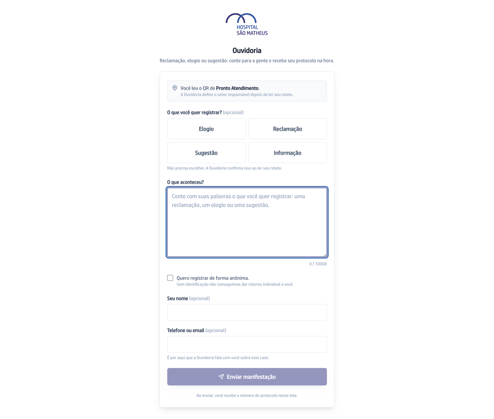
Por que o relato pode ser longo: o campo aceita até dez mil letras. A pessoa conta a história dela inteira, do jeito dela, e esse texto entra no caso sem ninguém editar.
Como a página é aberta na internet, ela tem algumas proteções que ninguém vê: um limite de envios por pessoa a cada minuto, para evitar enxurrada, e uma armadilha invisível contra robôs. Nada disso muda o que a pessoa escreve.
Um caso que entra por esta porta nasce sem tipo definido, e por segurança é tratado como sigiloso até o ouvidor ler e classificar. Se for uma reclamação comum, ele tira o sigilo. Se for uma denúncia, o sigilo fica.
Pelo cartaz na parede
Cada lugar do hospital que tem um cartaz é um Ponto de escuta: um setor, um nome de lugar ("Sala de espera", "Balcão principal") e um código curto de seis letras. O QR do cartaz não leva direto ao formulário: ele leva a um endereço do hospital que decide para onde mandar a pessoa.
Por que isso importa: se um dia o hospital decidir que o QR deve abrir a conversa da Ana no WhatsApp em vez do formulário, nenhum cartaz precisa ser reimpresso. Muda o destino no sistema, e o mesmo papel na parede passa a levar ao lugar novo.
| Pergunta | Resposta |
|---|---|
| O que está impresso no cartaz? | O QR e o endereço por extenso, para quem preferir digitar. Só isso. O nome do setor aparece no rodapé do cartaz, mas o código em si não diz nada. |
| Como é o código? | Seis letras e números sorteados pelo sistema. Ficam de fora o zero e a letra O, o um e a letra I, para ninguém errar ao digitar à mão. |
| E se o cartaz for de um ponto que saiu do ar? | Abre o formulário normal, só sem dizer de onde veio. Quem está na frente de um cartaz nunca fica sem canal. |
| Existem tipos diferentes de QR? | Não. Um único tipo, um por lugar. O que muda entre um cartaz e outro é só o cadastro por trás do código. |
| Quem cadastra e imprime? | O ouvidor ou a Diretoria, na própria tela do sistema. Cartaz é operação do dia a dia, não decisão de governança. |
Como fazer um cartaz novo
Fica no menu da Ouvidoria, no atalho "Pontos".
Um nome curto e reconhecível: "Sala de espera", "Poltrona 12". O sistema sorteia o código sozinho.
O botão "Cartaz A5" entrega um PDF já montado, com a logo, o QR grande e o endereço por extenso. Também dá para baixar só a imagem do QR, se a arte quiser montar o cartaz dela.
Tamanho A5, que é meia folha. Nada mais.
O botão "Aposentar" não apaga nada. O cartaz na parede continua funcionando, só para de dizer de onde a pessoa está falando. O histórico dos casos antigos continua apontando para aquele lugar.
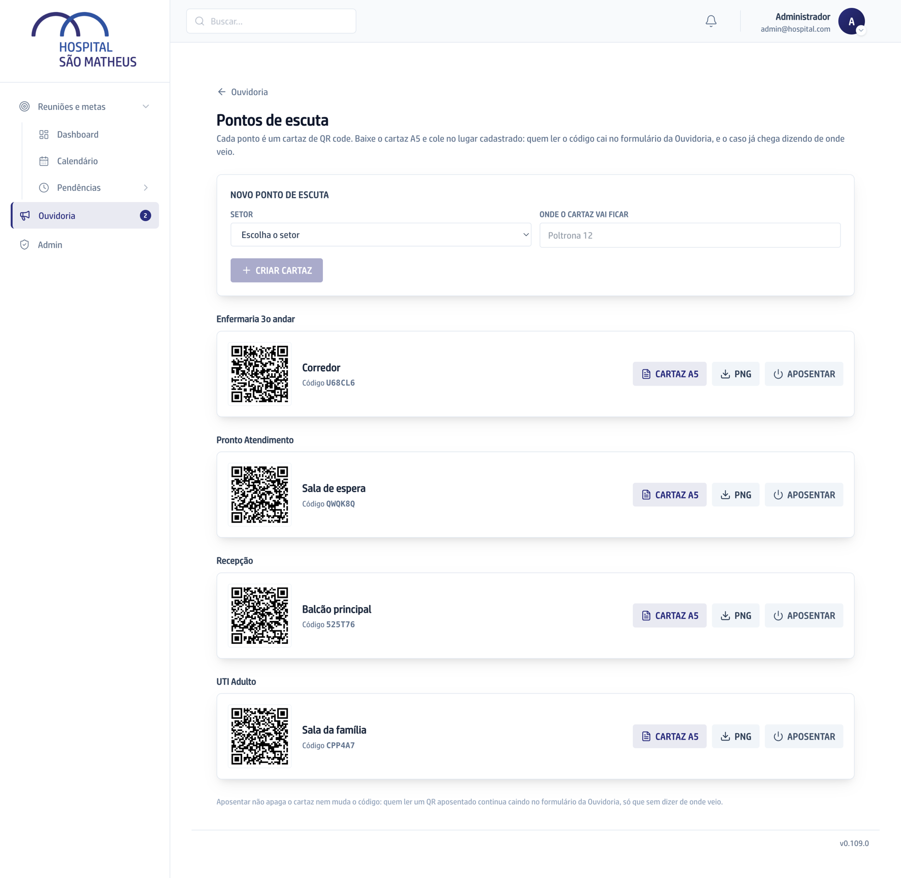
Quando alguém usa esse cartaz, o caso guarda de qual lugar veio e a página do caso mostra "Chegou pelo QR de um cartaz (Pronto Atendimento, Sala de espera)". Junto vem um aviso honesto: ler o QR não prova que a pessoa estava ali, porque o endereço pode ser aberto de qualquer lugar.
O setor do cartaz não é o setor responsável. Um cartaz colado na Sala de espera diz de onde a pessoa falou, não quem tem que responder. Quem escolhe o setor responsável é sempre o ouvidor, depois de ler o relato.
Pelo WhatsApp, com a Ana
A Ana é a assistente que conversa com pacientes e acompanhantes pelo WhatsApp. Ela não tem conta no sistema e não é usuária: ela registra o caso por uma porta própria, com nome, contato e o relato inteiro.
Ela também guarda um palpite sobre a gravidade, mas esse palpite fica separado, marcado como palpite, e nunca vira a classificação do caso. Se ela tentar mandar qualquer decisão que é do ouvidor (a situação, o desfecho, o tipo, o sigilo), o sistema recusa e diz por quê.
Pelo telefone ou pelo balcão
Nem todo mundo escreve. O botão "Nova manifestação" abre um formulário onde o ouvidor digita o caso que chegou por telefone, presencialmente ou por e-mail.
Duas coisas importam aqui. A primeira: a data e a hora que ele preenche são as do contato de verdade, não as do momento em que ele está digitando. Um telefonema de ontem pode ser registrado hoje com a hora de ontem, e o prazo conta a partir dali. A segunda: o que a pessoa disse entra inteiro, sem resumo e sem correção.
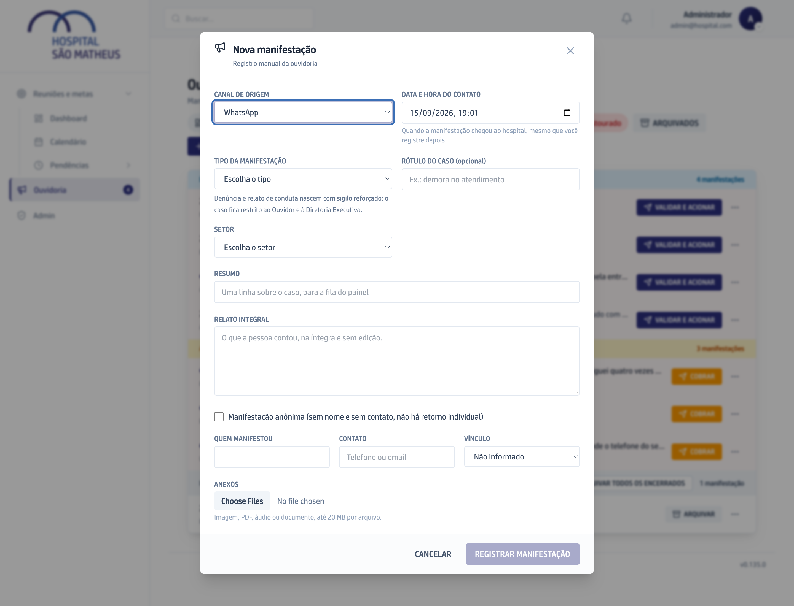
Veja acontecendo
A Ouvidoria lê e encaminha
É aqui que o caso deixa de ser um relato solto e vira uma demanda com dono e com prazo. Tudo acontece em um clique só, e esse clique é sempre de uma pessoa.
A lista de casos
A tela principal da Ouvidoria agrupa os casos por situação, na ordem do trabalho do dia: primeiro o que já foi respondido e espera o ouvidor encerrar, depois o que ainda não foi lido, depois o que está com os setores.
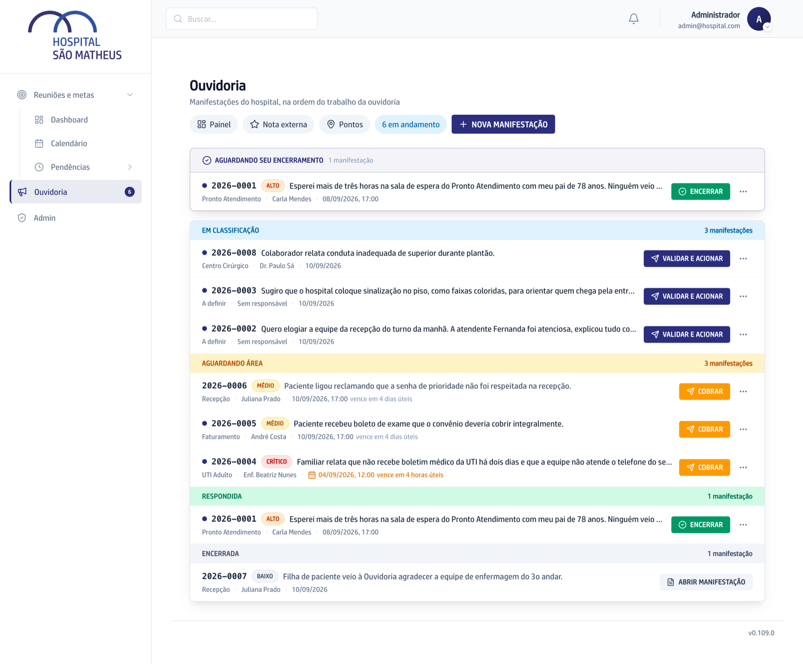
Cada linha tem dois andares. Em cima, o que identifica o caso: número, gravidade e o começo do relato. Embaixo, quem cuida e até quando: setor, responsável e vencimento. E à direita, a única ação que faz sentido naquele momento: classificar, cobrar ou encerrar.
Três informações, três lugares fixos
A situação fica na faixa colorida do bloco. A gravidade fica na etiqueta redonda. O prazo fica na cor da data. Elas nunca trocam de lugar e nunca se misturam.
O ponto azul é do caso, não da pessoa
Abrir o caso, classificar ou encerrar apaga o ponto para todo mundo. Uma pausa, uma devolução ou a resposta do setor não apagam: são novidades que ainda precisam ser vistas.
A cor da data é só sobre tempo
Vermelho para o que venceu ou vence hoje. Laranja para o que tem menos de um dia de folga. Cinza para o resto. Nada a ver com a cor da gravidade.
O botão "Cobrar" manda o e-mail para quem responde hoje, não para quem recebeu o e-mail original. Se o titular do setor mudou no meio do caminho, a cobrança vai para o titular novo.
Classificar e acionar
O botão "Validar e acionar" abre um formulário só. Quando o ouvidor confirma, quatro coisas acontecem ao mesmo tempo: o caso muda de situação, o prazo é calculado e congelado, o momento da decisão fica registrado, e o responsável do setor recebe o e-mail.
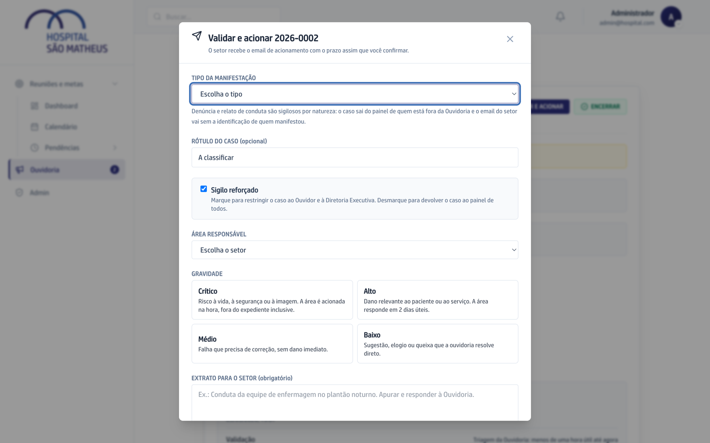
| Campo | O que é |
|---|---|
| Tipo | Denúncia, reclamação, sugestão, elogio, relato de conduta ou informação. É o tipo, e só ele, que faz um caso nascer sigiloso. |
| Área responsável | Vem da lista de setores da casa. Se o setor não tem titular no momento, o caso sobe direto para o gestor da área e a Diretoria é avisada. Se não tem nem titular nem gestor, o sistema recusa a operação: não dá para mandar um caso para o vazio. |
| Gravidade | Crítico, alto, médio ou baixo, com a explicação de cada degrau na própria tela. É ela que define o prazo. Caso crítico avisa a Diretoria na hora, inclusive de madrugada. |
| Recado para o setor | O texto que o ouvidor escreve com as palavras dele. É o que vai no e-mail e na tela de quem vai responder. |
Sem o recado para o setor, o botão nem liga. Não aparece mensagem de erro: o botão de confirmar simplesmente fica apagado até o texto ser escrito. É de propósito. O responsável do setor é de fora da Ouvidoria e o relato de quem reclamou não sai dali: o recado do ouvidor é a única coisa que ele recebe explicando o que precisa ser resolvido.
O que é sigiloso
Denúncia e relato de conduta nascem sigilosos em qualquer porta de entrada, sem ninguém precisar marcar nada. Caso que ainda não foi classificado também é tratado como sigiloso, por segurança.
A regra automática é piso, não teto. O ouvidor pode aumentar o sigilo de um caso que a lista não previu. O que ele não pode é tirar o sigilo de um tipo que é sigiloso por natureza.
| Situação | Quem vê o caso completo | O que o setor recebe |
|---|---|---|
| Caso comum | Ouvidor e Diretoria veem tudo. Quem usa o resto do sistema vê só o índice: número, setor, situação e prazo. | O resumo, o relato inteiro, o recado da Ouvidoria e quem falou. |
| Caso sigiloso | Só ouvidor e Diretoria. O caso nem aparece na lista de quem está fora da Ouvidoria. | Só o recado da Ouvidoria. Sem resumo, sem relato, sem nome. |
| Caso anônimo | Como o comum, mas sem os dados de quem falou. | Mesma proteção do sigiloso: só o recado. O anonimato se desfaria dentro do próprio texto do relato. |
| Quem administra o sistema | Fica de fora por regra. Cuidar do sistema não é o mesmo que poder ler denúncia. |
Tirar o sigilo é sempre um ato consciente: fica registrado no histórico do caso e no registro de quem acessou. Um caso que entrou pelo site e foi classificado como reclamação continua sigiloso até o ouvidor desmarcar a caixa de propósito.
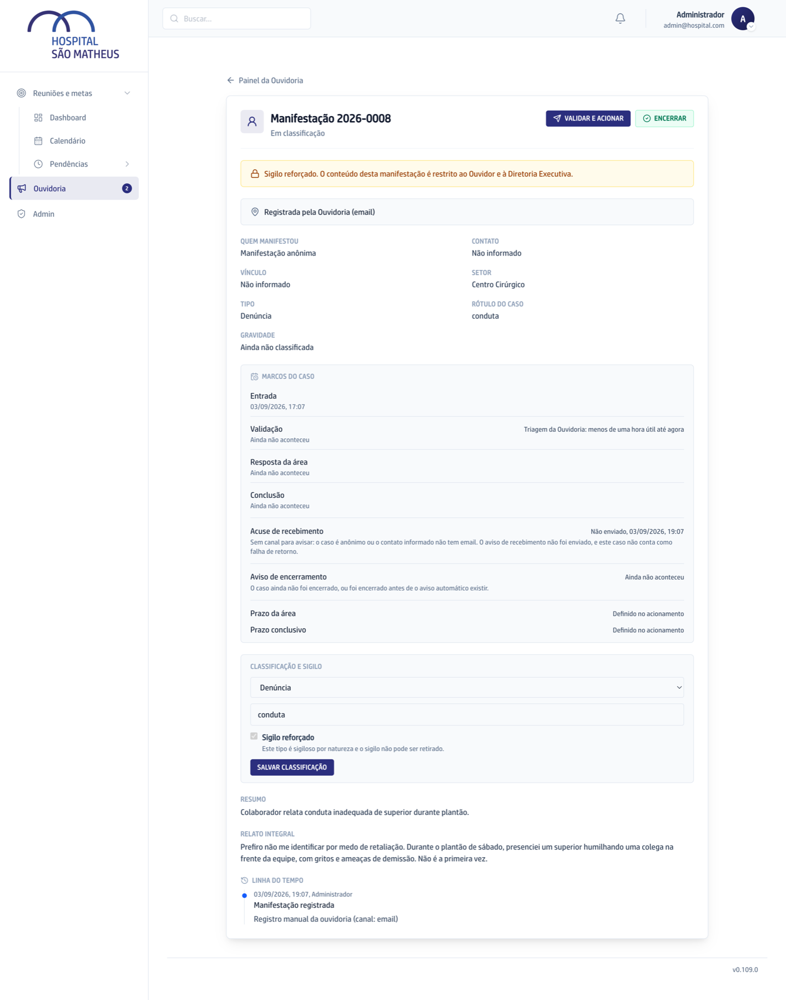
A página do caso
Cada caso tem uma página própria, com endereço próprio pelo número do protocolo. Os e-mails para quem tem login levam direto para ela, e quem não estiver logado é levado de volta ao mesmo lugar depois de entrar.
A página responde a pergunta mais importante: onde este caso emperrou. Ela mostra os quatro momentos do caso e quanto tempo de expediente passou entre cada um deles.
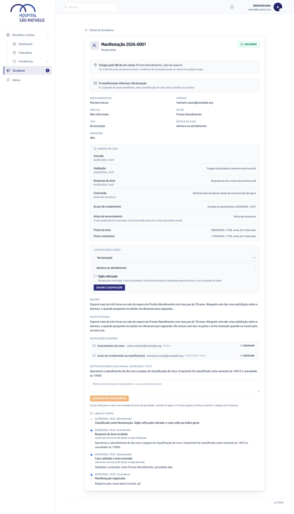
Os quatro momentos
Entrada (a hora real do contato), validação (quando o ouvidor encaminhou), resposta (quando o setor respondeu) e conclusão (quando a Ouvidoria encerrou). Mais os dois avisos ao manifestante e os dois prazos.
O histórico não se apaga
Todo movimento grava o que era antes, o que virou, quem fez e quando. Ninguém edita e ninguém apaga, nem quem administra o sistema. Erro se conserta com um movimento novo, não apagando o antigo.
Os e-mails ficam registrados
Todo e-mail existe primeiro como registro no caso, antes de sair. É isso que prova que a cobrança foi feita, e é daí que sai o botão "Reenviar". O reenvio vira um registro novo, sem apagar o original.
Encerrar exige duas coisas
Uma conclusão escolhida numa lista e um texto explicando. Sem os dois, o caso não fecha. O encerramento dispara o aviso para quem falou.
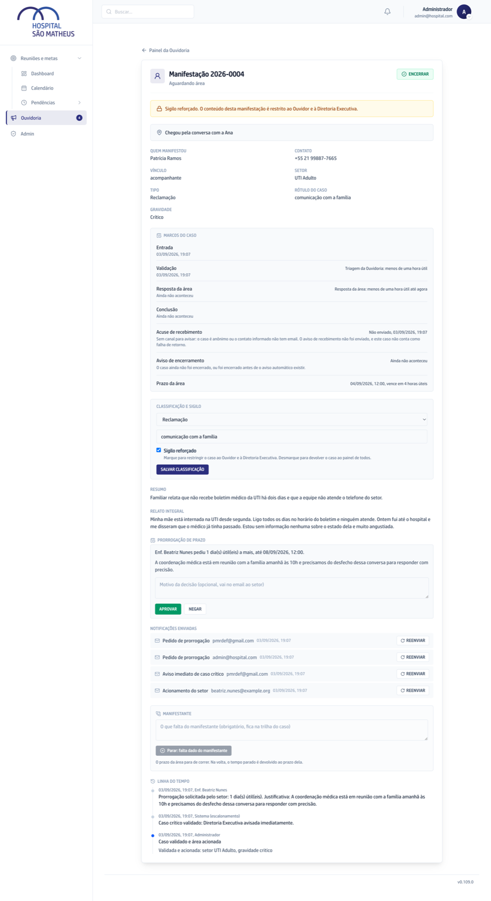
Veja acontecendo
O setor responde
Quem responde pela área é a pessoa menos treinada no sistema, e o sistema foi feito sabendo disso. Ela recebe um e-mail com um botão, abre no celular, lê e responde ali mesmo. Sem login, sem senha, sem treinamento.
O link do e-mail vale para aquele caso e aquela pessoa. Ele tem prazo de validade, é usado uma vez e some depois da resposta. Se o caso voltar para o setor mais tarde, sai um link novo.
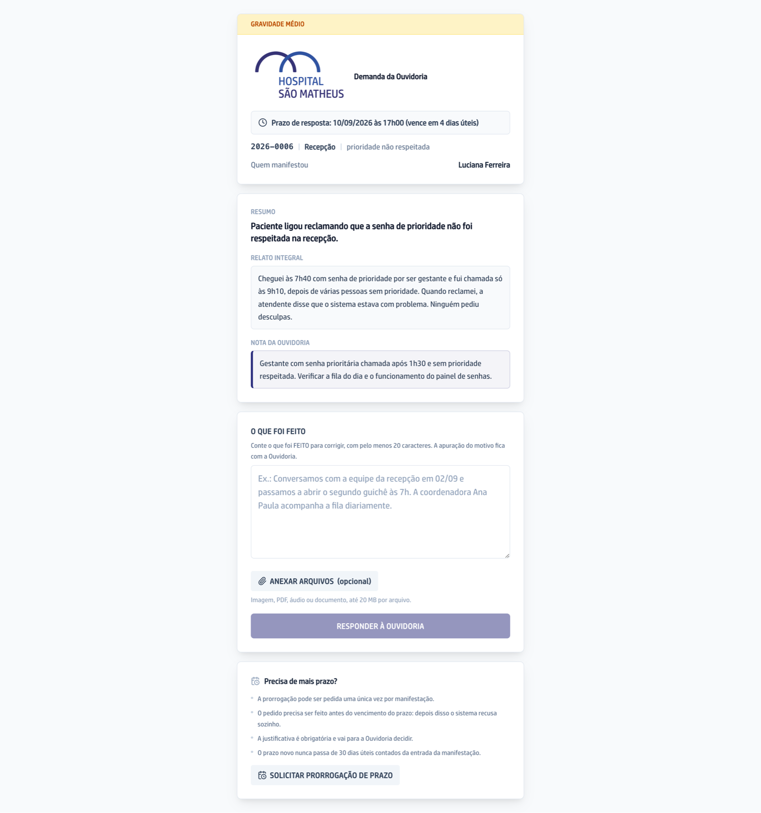
Por que nada entra entre a gravidade e o prazo: essas são as duas informações que mudam o comportamento de quem lê. A ordem da tela substitui o treinamento que essa pessoa não teve.
Os três blocos de texto
A tela mostra três textos, visualmente separados, e a separação tem um motivo:
- Resumo: uma frase sobre o que aconteceu.
- Relato integral: as palavras da pessoa que reclamou, sem edição.
- Recado da Ouvidoria: o que o ouvidor pede que seja apurado.
Separados assim, a área responde ao paciente, e não à interpretação que a Ouvidoria fez do caso. Em caso sigiloso ou anônimo, sai só o recado da Ouvidoria.
O que o sistema não aceita
| Tentativa | O que acontece |
|---|---|
| Resposta muito curta | O botão de enviar fica apagado até a resposta ter pelo menos vinte letras. A tela avisa antes, no texto acima do campo: conte o que foi feito para corrigir. A apuração do porquê fica com a Ouvidoria. |
| Resposta gigante | Um aviso aparece quando o texto se aproxima do limite, e o botão trava se passar. |
| Pedir mais prazo depois de vencer | Recusado. O pedido tem que ser feito antes do vencimento. |
| Pedir mais prazo duas vezes | Recusado. Vale uma vez por caso. |
| Pedir mais prazo sem explicar | Recusado. A justificativa é obrigatória e vai para o ouvidor decidir. |
Anexar arquivo é opcional: foto, PDF, áudio ou documento, até 20 MB cada.
O que acontece depois da resposta
No bloco "Aguardando seu encerramento". A resposta entra no histórico e não se apaga.
Com um motivo obrigatório, que vai no e-mail para o setor. Chega um link novo.
A área volta a ter só metade do prazo da gravidade, somado ao tempo que já correu. Se o prazo já estourou, ele continua estourado.
Com uma conclusão, e a pessoa que falou recebe o aviso.
Veja acontecendo
O relógio e a cobrança
O prazo vem da gravidade, e quem define a tabela é a Diretoria. Depois que o caso é encaminhado, o prazo fica congelado nele. A cobrança não depende de ninguém abrir tela: o sistema varre a lista sozinho, a cada dez minutos.
Quanto tempo cada um tem
A tabela cruza a gravidade com cada momento do caso. Campo em branco quer dizer "não existe prazo para essa combinação". Zero quer dizer "imediato".
| Momento | Crítico | Alto | Médio | Baixo |
|---|---|---|---|---|
| Avisar que chegou | no mesmo dia | 24 horas | 24 horas | 24 horas |
| A Ouvidoria ler e encaminhar | imediato | 4 horas úteis | 1 dia útil | 1 dia útil |
| A área responder | 4 horas úteis | 2 dias úteis | 4 dias úteis | não passa pela área |
| Concluir com a pessoa | sem prazo fixo | 5 dias úteis | 7 dias úteis | 2 dias úteis |
Só um prazo corre no relógio de parede: o aviso de que a manifestação chegou. Ele conta em horas corridas, contando noite e fim de semana, porque é uma promessa a quem esperou. Todo o resto conta só em horário de expediente.
Estes números são o ponto de partida. O que vale de verdade é o que estiver na tela de prazos, porque a Diretoria pode mudar. Cada mudança guarda quem mudou, quando, e de quanto para quanto.
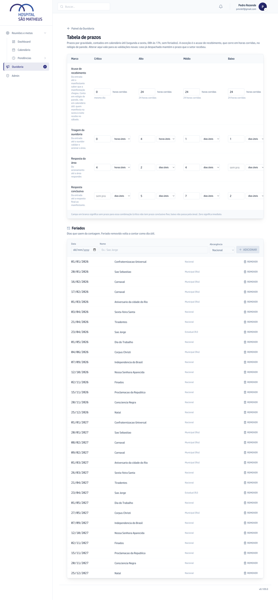
Mudar a tabela não mexe em caso já encaminhado. Quem já recebeu uma demanda com prazo continua com aquele prazo. A tabela nova vale para os casos que forem encaminhados daqui para frente.
Como o prazo é contado
O expediente
Segunda a sexta, das 8h às 17h. A hora útil anda dentro desse período e para às 17h. Se um caso é encaminhado às 16h50, sobram dez minutos daquele dia.
Os feriados
Nacionais, do estado do Rio e do município do Rio, numa lista que a Diretoria edita. Feriado sai da conta. Feriado removido volta a contar como dia útil.
O dia do fato não conta
Um caso encaminhado na sexta às 16h50 com prazo de 2 dias úteis: a contagem abre na segunda às 8h e vence na terça às 17h.
Uma conta só, para todo mundo. A lista, a página do caso, o e-mail e o relatório mostram exatamente o mesmo prazo e a mesma frase ("vence em 2 dias úteis", "vencido há 3 horas úteis"), porque todos perguntam ao mesmo lugar. Não existe uma tela dizendo uma coisa e outra dizendo outra.
Quando ninguém responde
O sistema varre os casos abertos a cada dez minutos e sobe uma escada de quatro degraus. Cada degrau é um e-mail para uma pessoa diferente.
Ainda dá tempo de responder sem estourar nada.
O substituto entra junto aqui. A ausência de uma pessoa não trava o caso.
Deixa de ser assunto do setor e vira assunto da gestão.
Último degrau. Nenhum caso morre ignorado.
Cobrança respeita horário comercial
Uma cobrança que nasce de madrugada espera a próxima abertura do expediente para sair. A exceção é o caso crítico, que sai na hora, a qualquer hora.
Se o e-mail falha, o sistema tenta de novo
Com espera crescente entre as tentativas. Na terceira falha, o caso é marcado como falha de envio e quem cuida do sistema é avisado.
Escada honesta
Antes de subir um degrau, o sistema olha se existe alguém naquele degrau. Se não existe ninguém para quem escalar, o caso sai da varredura com o carimbo de "não há a quem escalar" em vez de queimar degraus no vazio, e a Diretoria recebe um aviso separado, de cadastro.
Setor sem titular não fica parado
A demanda sobe direto para o gestor da área e a Diretoria é avisada. Sem titular e sem gestor, o encaminhamento é recusado na hora de classificar.
Quando a vida complica
O sistema já entende seis situações que fogem do caminho reto.
A área precisa de mais tempo
Ela pede pelo próprio link, com justificativa e quantos dias precisa. Vale uma vez só, sempre antes de vencer, e o prazo novo nunca passa de 30 dias úteis contados da entrada. Quem decide é o ouvidor, e quem pediu recebe a decisão por e-mail mesmo que já tenha respondido.
A resposta veio fraca
O ouvidor devolve com um motivo obrigatório. A área volta a ter metade do prazo da gravidade, somado ao tempo já corrido. Se o prazo já tinha estourado, continua estourado: a devolução não limpa o histórico.
Falta informação de quem reclamou
O caso vai para "aguardando manifestante" e o relógio da área para. Quando volta, o vencimento anda para frente o mesmo tanto de tempo que ficou parado. O relatório mostra esse tempo separado, para a pausa não esconder lentidão de verdade.
A pessoa some
Depois de duas tentativas de contato registradas e cinco dias úteis de espera, o ouvidor encerra por "sem retorno do manifestante". É uma conclusão neutra: não conta como resolvido nem como não resolvido nas estatísticas.
A pessoa volta a reclamar do mesmo
Se ela volta em até 30 dias, o caso original é marcado como reincidência e reabre. Não nasce protocolo novo. A área recebe um link novo, e a reabertura só pode aumentar o sigilo, nunca diminuir.
O caso teve várias idas e voltas
Cada devolução e cada resposta viram um ciclo com histórico próprio. O indicador de cumprimento de prazo é honesto: ele guarda o prazo que foi rompido, não a hora em que a resposta finalmente chegou.
Veja acontecendo
O que volta para quem falou
Só dois e-mails saem do hospital para fora, e os dois só existem quando há um e-mail de contato no caso. Um avisa que chegou. O outro conta no que deu.
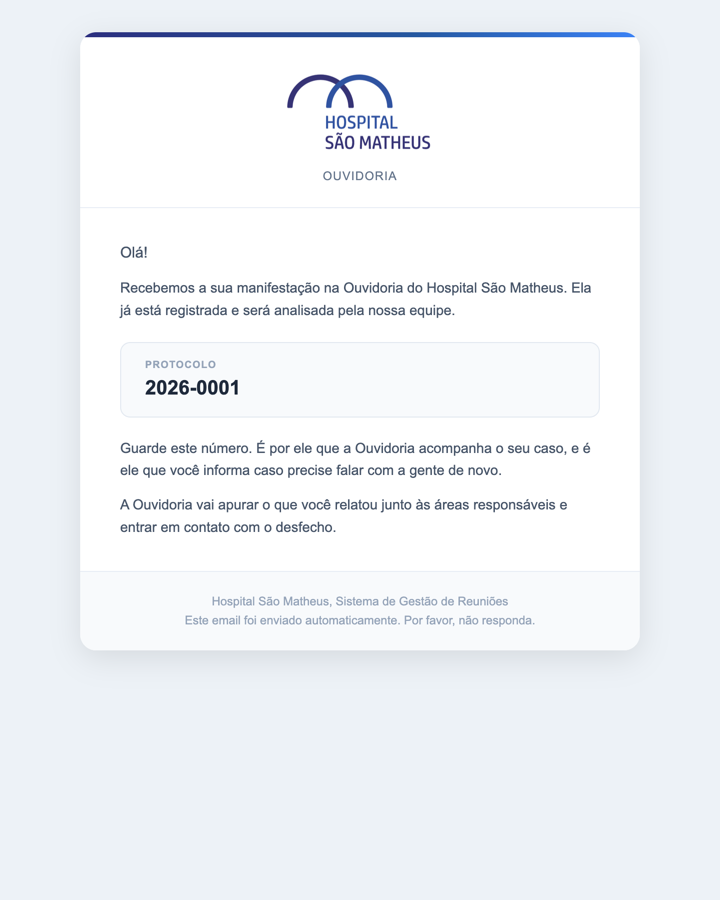
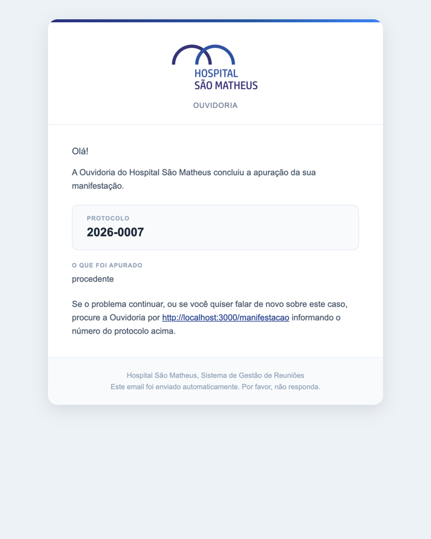
Por que os dois e-mails contam tão pouco
Os e-mails do sistema saem por um serviço de envio de fora do Brasil. Por causa disso, foi decidido campo a campo o que pode viajar. Para quem falou com a Ouvidoria, viajam o protocolo e a conclusão. O relato dela nunca volta por e-mail, a resposta que o setor escreveu nunca sai, e nenhum nome de colaborador aparece.
O texto do encerramento sai do hospital. A tela avisa isso antes do campo, não depois: quem escreve precisa saber que aquela frase vai ser lida por um paciente ou um familiar. Nada de nome de colaborador, nada de medida disciplinar, nada de detalhe da apuração interna.
Quando não há e-mail de contato, quando a pessoa pediu anonimato ou quando o contato é só um telefone, o aviso não sai e o caso registra isso com todas as letras: "não enviado, sem canal". O texto da conclusão continua no registro do caso.
Veja acontecendo
Quem faz o quê
O acesso à Ouvidoria é separado do resto do sistema. Ter acesso a reuniões ou a documentos não dá acesso a nenhum caso, e nem quem administra o sistema lê um caso sigiloso.
| Quem | Como entra | O que pode fazer | O que não pode |
|---|---|---|---|
| Ouvidor | Login no sistema, com o acesso concedido por quem administra. | Abrir qualquer caso, inclusive sigiloso. Registrar caso por telefone, classificar, encaminhar, devolver, reabrir, cobrar, decidir pedido de prazo, registrar tentativas de contato e encerrar. Cadastrar pontos de escuta e imprimir cartazes. Lançar a nota externa. Ver painel e relatórios. | Mexer na tabela de prazos e feriados. Cadastrar responsáveis de setor. |
| Diretoria Executiva | Login no sistema, mesmo caminho. | Tudo o que o ouvidor faz, mais o que é só dela: a tabela de prazos, os feriados e os responsáveis por setor. Recebe os casos que subiram a escada, o aviso de caso grave, o aviso de cadastro faltando e os relatórios. | Apagar ou editar o histórico de um caso. Ninguém pode. |
| Responsável do setor | Não entra. Recebe um e-mail com link próprio. Pode ser titular, substituto ou gestor da área. | Ler o caso que veio para ele, responder o que foi feito, anexar arquivo e pedir mais prazo uma vez. | Ver a lista de casos, ver outros casos, ou saber o nome de quem falou em caso protegido. |
| Quem usa o resto do sistema | Login normal, sem acesso à Ouvidoria. | Ver só o índice dos casos não sigilosos: número, setor, situação e prazo. | Abrir o caso. Ver caso sigiloso. |
| Quem administra o sistema | Login com poderes de administração. | Dar e tirar o acesso à Ouvidoria, e isso fica registrado. Receber avisos técnicos, como falha de envio de e-mail. | Ler caso sigiloso. Editar histórico. Cuidar do sistema não é o mesmo que poder ler denúncia. |
| Ana, no WhatsApp | Por uma porta de serviço, com chave própria. | Registrar uma manifestação e consultar o andamento de um protocolo. | Classificar, mudar situação, definir conclusão, tipo ou sigilo. |
Como dar acesso a alguém
Quem administra o sistema abre a tela de usuários, edita a pessoa e escolhe "Acesso à Ouvidoria": sem acesso, ouvidor, ou Diretoria Executiva. São só esses três valores. A pessoa não precisa nem ter entrado no sistema ainda: o acesso fica reservado esperando o primeiro login.
Quem sai do hospital perde o acesso. Uma pessoa desligada para de abrir casos e para de receber os avisos, sem ninguém precisar lembrar de tirar da mão.
Responsáveis por setor
Cada setor tem quem responde por ele, com um papel e um período. Os papéis são três: titular (recebe o encaminhamento), substituto (entra junto na cobrança) e gestor da área (recebe quando a coisa sobe).
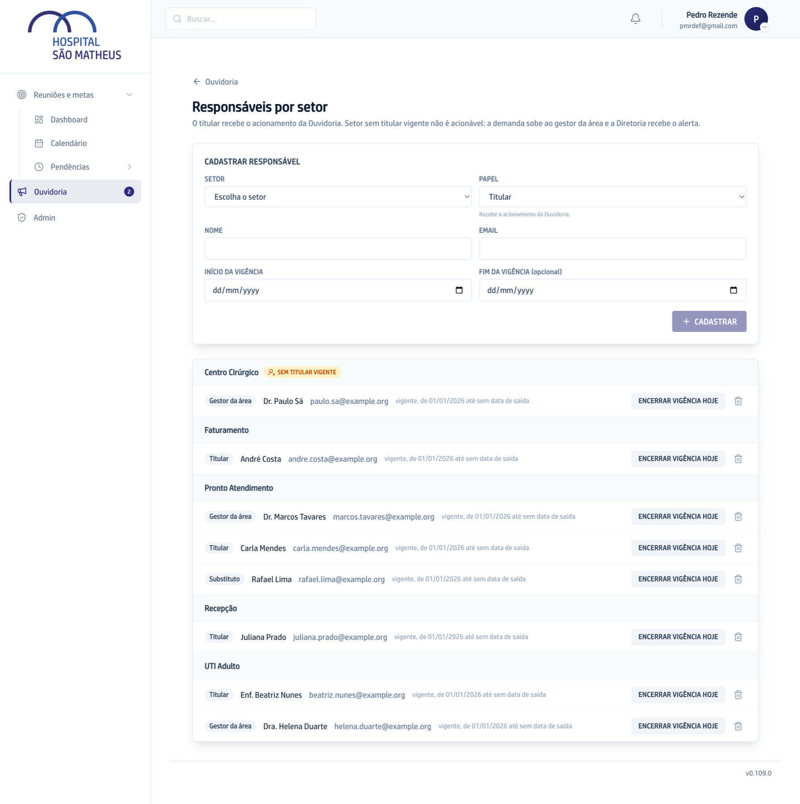
Para tirar alguém do papel, encerre a vigência. Nunca apague. O período tem fim inclusivo: quem sai no dia 31 ainda responde no dia 31. Apagar quebraria o histórico dos casos antigos, que apontam para quem respondia na época.
Veja acontecendo
O que a Diretoria enxerga
Um único lugar faz todas as contas. É por isso, e não por disciplina de quem escreve as telas, que o número do painel nunca discorda do número do relatório.
O painel, em tempo real
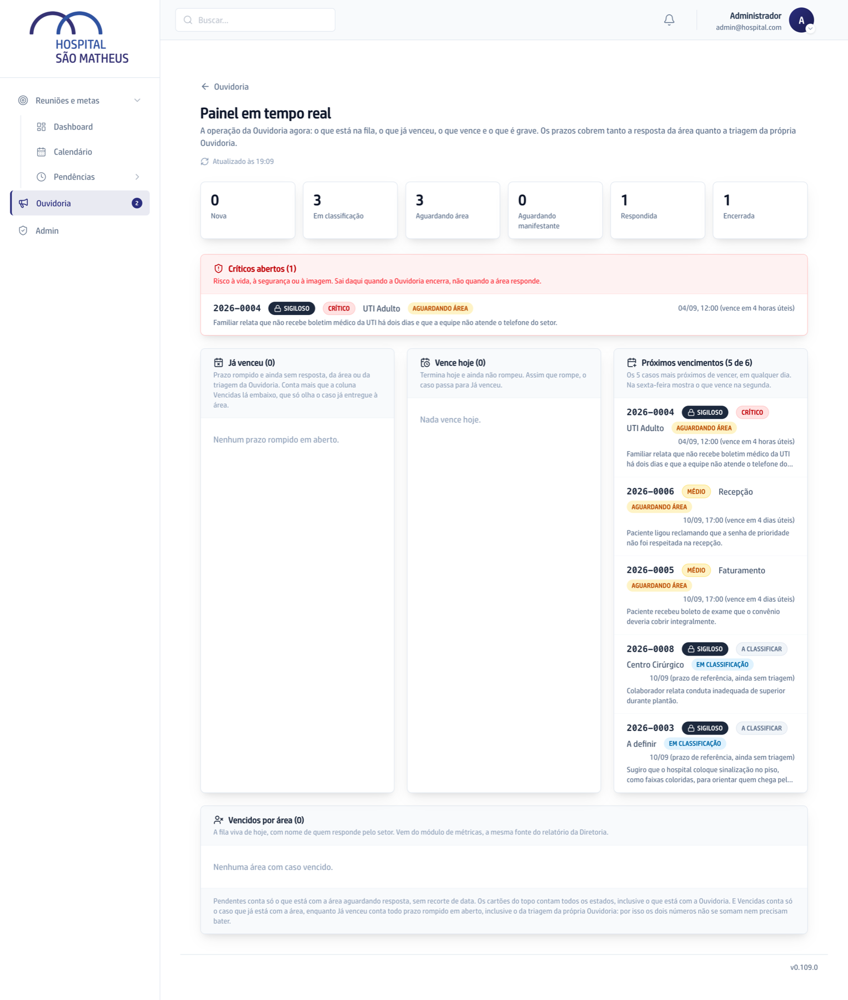
Duas perguntas diferentes
Quase tudo no painel responde "o que entrou no período". Mas "vencidos por área" responde outra coisa: o que está pendente agora. Assim a área com o caso mais atrasado não some da tela só porque o caso entrou no mês passado.
Quando falta dado, o painel avisa
Se alguma parte não conseguiu ser lida, ela aparece marcada como incompleta. Número inventado é o pior jeito de um painel falhar.
Caso grave sai daqui quando encerra
Não quando a área responde. Enquanto a Ouvidoria não concluir, ele continua contando como grave em aberto.
Os relatórios que chegam por e-mail
| Relatório | Quando | O que traz |
|---|---|---|
| Quinzenal | Dias 1 e 16 | Os números do período: quantos casos entraram por tipo, por área, por gravidade e por porta de entrada; quanto a área cumpriu de prazo; quanto tempo o caso passou em cada trecho; o que está pendente; e o retrato externo, com a nota do Google e do Reclame Aqui congelada naquele momento. |
| Mensal | Dia 1 | Tudo do quinzenal, mais como a nota externa evoluiu e uma seção de sugestões de ação escrita por inteligência artificial. Ela recebe só os números somados, nunca o relato de ninguém. |
Os dois vão para a Diretoria Executiva. O registro do relatório guarda quem recebeu e o que de fato saiu. Se o envio falhar, existe uma fila de recuperação, e dá para reenviar exatamente o mesmo documento depois.
A nota externa
As estrelas do Google e o índice do Reclame Aqui não são medidos pelo sistema. O ouvidor abre as duas páginas, lê o que está lá e digita. Cada vez que ele digita, nasce uma linha nova, com data e autor.
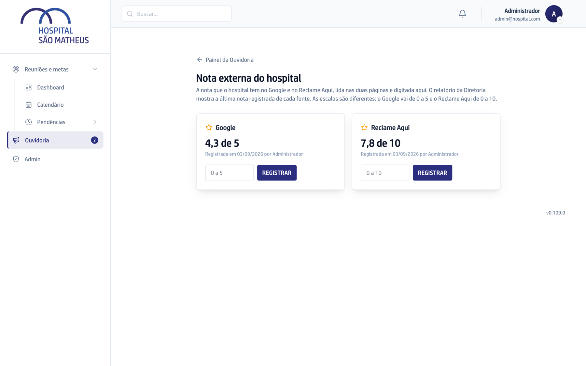
É um diário, não um campo que se sobrescreve. O relatório de julho, reenviado em setembro, mostra a nota de julho. E ausência de nota nunca vira zero: se ninguém lançou, o relatório diz que não foi lançado.
O que o sistema apaga sozinho
Depois de cinco anos, o relato some
De madrugada, o sistema apaga o conteúdo dos casos encerrados há mais de cinco anos, contados da conclusão. Ele varre os cinco lugares onde o relato pode estar: a manifestação, os anexos, as observações do histórico, as tentativas de contato e o detalhe dos avisos enviados. O que os relatórios contam é preservado: some o texto, ficam os números.
Números nunca levam nome junto
Antes de qualquer texto entrar numa conta ou num resumo, o sistema tira dele os dados que identificam pessoas. Isso vale inclusive para o que a inteligência artificial lê no relatório mensal: ela recebe o agregado, nunca o relato.
Veja acontecendo
Todos os vídeos
Cada capítulo termina com um vídeo curto, atuado de ponta a ponta nas telas de verdade do sistema, sem narração. Use esta lista para ir direto ao que você quer ver.
| Capítulo | Duração | O que o vídeo mostra |
|---|---|---|
| 1 | 0:55 | Por onde o caso chega: um elogio entra pelo cartaz do Pronto Atendimento e a página do caso mostra de onde veio. |
| 2 | 0:58 | A Ouvidoria lê e encaminha: o ponto azul, a tela de classificar e o caso mudando de faixa com o e-mail saindo. |
| 3 | 1:00 | O setor responde: o e-mail de acionamento, a tela do responsável e a resposta curta que não liga o botão. |
| 4 | 1:02 | O relógio e a cobrança: a tabela de prazos, a sexta que vence na terça, o pedido de mais prazo e a escada de cobrança. |
| 5 | 0:56 | O que volta para quem falou: o aviso de que chegou e o aviso de que terminou, os dois únicos e-mails que saem. |
| 6 | 0:58 | Quem faz o quê: a concessão do acesso, a vigência do responsável e o setor sem titular. |
| 7 | 1:03 | O que a Diretoria enxerga: o painel se atualizando, a nota do Google lançada e o relatório quinzenal chegando. |
Dois vídeos mais antigos
Estes dois contam a história de uma entrega inteira, e não de um capítulo. Ficam aqui como registro.